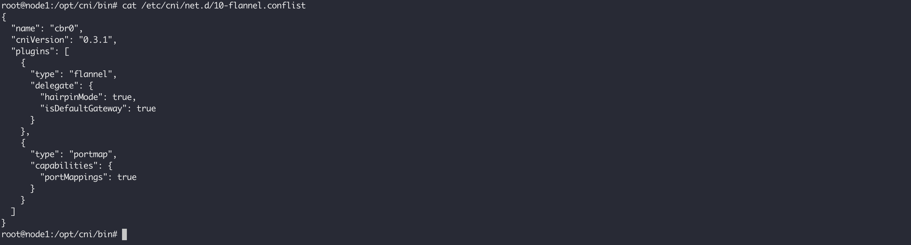
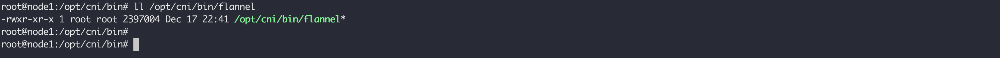
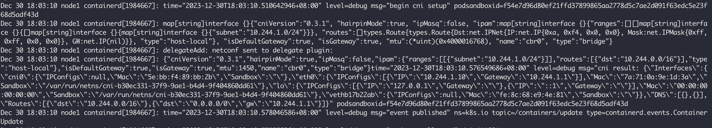
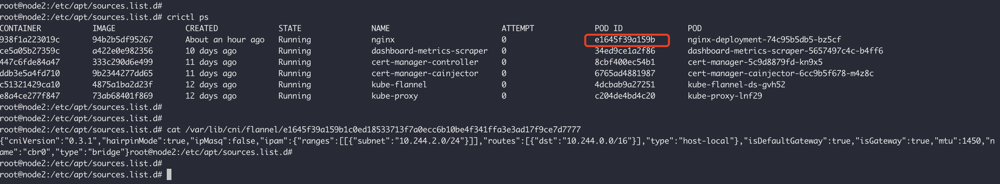
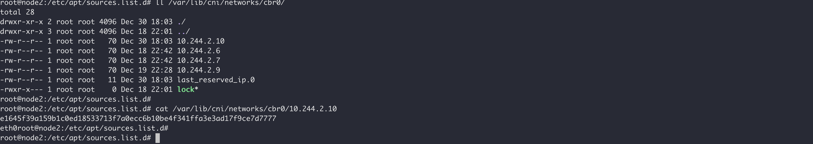
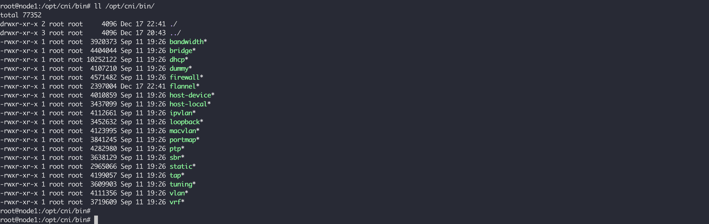
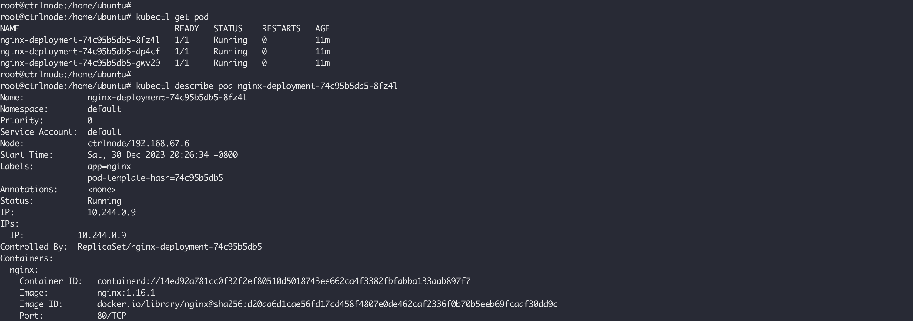

在容器网络-跨主机容器通信 中，我们使用flannel实现了容器的跨主机通信，在使用kubeadm创建多借点集群 时，在集群初始化之后，首先安装了kube-flannel CNIk8s集群pod之间互通，这是集群节点Ready的必要条件，因为k8s自身并不能实现pod之间互通，需要借助CNI 完成此功能。
单机容器通信是将主上的容器通过连接在docker0网桥实现，然后跨主机容器通信是通过vxlan中的flannel.x设备实现跨主机之间的容器通信，k8s的flannel-cni插件处理不同pod之间互通的方式就和跨主机容器通信的方式一样，只不过在k8s集群中将用于单机上容器互通的docker0网桥换成了cni0。
k8s之所以要创建一个与docker0功能相同的网桥，是因为k8s并没有使用Docker的网络模型，它并不希望和Docker之间有强依赖，所以不具备配置这样一个网桥的能力。
所以在使用flannel-cni插件的模式下，k8s之间不同pod互通的模式下如下图所示，和容器网络-跨主机容器通信 唯一区别是网桥名称的变化：
在使用kubeadm创建多借点集群 中，使用了如下的命令的来初始化flannel-cni 插件：
kubectl apply -f https://raw.githubusercontent.com/coreos/flannel/master/Documentation/kube-flannel.yml
这个过程会在各个节点上创建flannel-cni 的配置，并且会运行一个和容器网络-跨主机容器通信 中flanneld相同功能的Flannel DaemonSet ，flannel DaemonSet的配置以ConfigMap 的形式创建并且挂到了容器中，如果你初始化k8s集群时没有使用10.244.0.0/16这个Pod网络，就需要修改kube-flannel.yml。可以使用如下命令查看配置信息：
kubectl describe configmaps -n kube-flannel kube-flannel-cfg
flannel-cni的配置也是放在了kube-flannel-cfg中，它最终挂在到了每个节点上的 /etc/cni/net.d/10-flannel.conflist 中：

还有它会把flannel-cni的二进制文件放在节点上的 /opt/cni/bin/flannel：

这个配置文件的使用者是CRI，在我的集群配置中就是containerd，由CRI容器运行时负责调用CNI实现Pod的网络配置。这里要注意的是，目前k8s不支持多个CNI插件使用，所以即使你在/etc/cni/net.d/目录中配置多个CNI插件，它也只会加载一个，可以点击查看containerd 默认配置 ：
1 2 3 4 5 6 7 8 9 10 11 12 13 14 15 func DefaultConfig () var m map [string ]interface {} toml.Unmarshal([]byte (defaultRuncV2Opts), &m) return PluginConfig{ CniConfig: CniConfig{ NetworkPluginBinDir: "/opt/cni/bin" , NetworkPluginConfDir: "/etc/cni/net.d" , NetworkPluginMaxConfNum: 1 , NetworkPluginSetupSerially: false , NetworkPluginConfTemplate: "" , }, ... } }
在containerd启动的过程中，会读取配置 ：
1 2 3 4 5 6 7 8 9 10 11 12 13 14 15 16 17 18 19 20 21 22 23 24 25 func (c *criService) error ) { .... c.netPlugin = make (map [string ]cni.CNI) for name, dir := range pluginDirs { max := c.config.NetworkPluginMaxConfNum if name != defaultNetworkPlugin { if m := c.config.Runtimes[name].NetworkPluginMaxConfNum; m != 0 { max = m } } i, err := cni.New(cni.WithMinNetworkCount(networkAttachCount), cni.WithPluginConfDir(dir), cni.WithPluginMaxConfNum(max), cni.WithPluginDir([]string {c.config.NetworkPluginBinDir})) if err != nil { return fmt.Errorf("failed to initialize cni: %w" , err) } c.netPlugin[name] = i } .... }
当kubelet创建Pod的时候，它首先调用containerd的RunPodSandbox 方法创建一个沙盒，在这个沙盒里面创建用于pod内网络共享的的命名空间并且设置网络，而containerd并不会自己创建网络，它必须调用flannel-cni插件来实现，所以在这个 RunPodSandbox 中就是准备flannel-cni 所需的参数，并且调用它，这部分的实现主要在setupPodNetwork 中：
1 2 3 4 5 6 7 8 9 10 11 12 13 14 15 16 17 18 19 20 21 22 23 24 25 26 27 28 29 30 31 32 33 func (c *criService) error { var ( id = sandbox.ID config = sandbox.Config path = sandbox.NetNSPath netPlugin = c.getNetworkPlugin(sandbox.RuntimeHandler) err error result *cni.Result ) if netPlugin == nil { return errors.New("cni config not initialized" ) } opts, err := cniNamespaceOpts(id, config) if err != nil { return fmt.Errorf("get cni namespace options: %w" , err) } log.G(ctx).WithField("podsandboxid" , id).Debugf("begin cni setup" ) netStart := time.Now() if c.config.CniConfig.NetworkPluginSetupSerially { result, err = netPlugin.SetupSerially(ctx, id, path, opts...) } else { result, err = netPlugin.Setup(ctx, id, path, opts...) } networkPluginOperations.WithValues(networkSetUpOp).Inc() networkPluginOperationsLatency.WithValues(networkSetUpOp).UpdateSince(netStart) if err != nil { networkPluginOperationsErrors.WithValues(networkSetUpOp).Inc() return err } logDebugCNIResult(ctx, id, result) ... }
从cni-operations 规范我们可以看到，它定义了四种操作：ADD，DEL，CHECK 和 和VERSION，其实有用的只有ADD，DEL，给这两操作传递参数是通过环境变量和标准输入进行的。以ADD操作为例，我们需要在调用CNI插件的时候，将操作的名称通过环境变量CNI_COMMAND设置，另外还需要设置CNI_IFNAME（网卡名称）、CNI_NETNS（Pod的网络命名空间路径）以及 CNI_CONTAINERID（容器ID）。
对于 flannel-cni 为例，它实现 CNI 的插件在 /opt/cni/bin/flannel，我们来看看它里面实现的ADD 操作如下：
1 2 3 4 5 6 7 8 9 10 11 12 13 14 15 16 17 18 19 20 21 22 23 24 25 26 27 28 29 30 31 32 33 34 35 36 37 38 39 40 41 42 43 44 45 46 47 48 49 50 51 52 53 54 55 56 57 func doCmdAdd (args *skel.CmdArgs, n *NetConf, fenv *subnetEnv) error { n.Delegate["name" ] = n.Name if !hasKey(n.Delegate, "type" ) { n.Delegate["type" ] = "bridge" } if !hasKey(n.Delegate, "ipMasq" ) { ipmasq := !*fenv.ipmasq n.Delegate["ipMasq" ] = ipmasq } if !hasKey(n.Delegate, "mtu" ) { mtu := fenv.mtu n.Delegate["mtu" ] = mtu } if n.Delegate["type" ].(string ) == "bridge" { if !hasKey(n.Delegate, "isGateway" ) { n.Delegate["isGateway" ] = true } } if n.CNIVersion != "" { n.Delegate["cniVersion" ] = n.CNIVersion } ipam, err := getDelegateIPAM(n, fenv) if err != nil { return fmt.Errorf("failed to assemble Delegate IPAM: %w" , err) } n.Delegate["ipam" ] = ipam fmt.Fprintf(os.Stderr, "\n%#v\n" , n.Delegate) return delegateAdd(args.ContainerID, n.DataDir, n.Delegate) } func delegateAdd (cid, dataDir string , netconf map [string ]interface {}) error { netconfBytes, err := json.Marshal(netconf) fmt.Fprintf(os.Stderr, "delegateAdd: netconf sent to delegate plugin:\n" ) os.Stderr.Write(netconfBytes) if err != nil { return fmt.Errorf("error serializing delegate netconf: %v" , err) } if err = saveScratchNetConf(cid, dataDir, netconfBytes); err != nil { return err } result, err := invoke.DelegateAdd(context.TODO(), netconf["type" ].(string ), netconfBytes, nil ) if err != nil { err = fmt.Errorf("failed to delegate add: %w" , err) return err } return result.Print() }
/opt/cni/bin/flannel在每次被调用的时候会读取配置每个节点上的配置文件 /run/flannel/subnet.env，这部分代码实现请看这里 。在setupPodNetwork中，沿着 netPlugin.SetupSerially 最终会到达这里 ，由它去调用/opt/cni/bin/flannel:
1 2 3 4 5 6 7 8 9 10 11 12 13 14 15 16 17 18 19 20 21 22 23 func (c *CNIConfig) string , net *NetworkConfig, prevResult types.Result, rt *RuntimeConf) (types.Result, error ) { c.ensureExec() pluginPath, err := c.exec.FindInPath(net.Network.Type, c.Path) if err != nil { return nil , err } if err := utils.ValidateContainerID(rt.ContainerID); err != nil { return nil , err } if err := utils.ValidateNetworkName(name); err != nil { return nil , err } if err := utils.ValidateInterfaceName(rt.IfName); err != nil { return nil , err } newConf, err := buildOneConfig(name, cniVersion, net, prevResult, rt) if err != nil { return nil , err } return invoke.ExecPluginWithResult(ctx, pluginPath, newConf.Bytes, c.args("ADD" , rt), c.exec) }
打开containerd的debug日志之后，通过下面的命令可以查看在创建Pod的时候，通过标准输入提供给/opt/cni/bin/flannel的参数：
SYSTEMD_LESS="" journalctl -eu containerd

点击查看示例
1 2 3 4 5 6 7 8 9 10 11 12 13 14 15 16 17 18 19 20 21 22 23 24 25 { "cniVersion" : "0.3.1" , "hairpinMode" : true , "ipMasq" : false , "ipam" : { "ranges" : [ [ { "subnet" : "10.244.1.0/24" } ] ] , "routes" : [ { "dst" : "10.244.0.0/16" } ] , "type" : "host-local" } , "isDefaultGateway" : true , "isGateway" : true , "mtu" : 1450 , "name" : "cbr0" , "type" : "bridge" }
上面的参数还会保存在/var/lib/cni/flannel/路径下，按照PodID保存：

而且在/var/lib/cni/networks/cbr0/目录下还保存了已分配的IP和Pod的对应关系，cbr0指的是网络插件的名称，和 /etc/cni/net.d/10-flannel.conflist 里面的保持一致：

当我们去看 /opt/cni/bin/flannel 的代码实现的时候，发现它并没有做什么创建网络的操作，它又调用了其他的插件：
1 2 3 4 5 6 7 8 9 10 11 12 13 func delegateAdd (cid, dataDir string , netconf map [string ]interface {}) error { netconfBytes, err := json.Marshal(netconf) fmt.Fprintf(os.Stderr, "delegateAdd: netconf sent to delegate plugin:\n" ) os.Stderr.Write(netconfBytes) ... result, err := invoke.DelegateAdd(context.TODO(), netconf["type" ].(string ), netconfBytes, nil ) if err != nil { err = fmt.Errorf("failed to delegate add: %w" , err) return err } return result.Print() }
从CRI传递给flannel的参数来看，实际调用的是bridge，所以说 flannel 这个网络插件实际上并没有做什么，他把具体的活又委托了出去。在flannel-cni插件的配置中有一个delegate字段，这个字段的意思表明了这个插件需要调用其他CNI的内置插件来完成，对于flannel来说，如果没有指定，就是 bridge，这些通用的网络插件 由官方维护，它会被统一安装在 /opt/cni/bin 目录下：

这些插件可以分为三类：
Main插件，它们是用来创建具体网络设备的二进制文件，比如：bridge、ipvlan、loopback、tap、macvlan 等；IPAM插件，负责IP地址的分配，比如 dhcp，它会向DHCP服务器发起请求；host-local 会使用预先配置的地址段来进行分配，flannel 使用这种方式，它的本机上的分配的地址段放在了/run/flannel/subnet.env文件中，已分配的IP放在了 /var/lib/cni/networks/cbr0/ 中；Meta插件，例如通过sysctl调整网络设备参数的tuning，通过iptables配置端口映射的portmap，以及使用TBF来进行限流的bandwidth等，flannel也属于这一类，委托其他插件干活；
这些插件可以从containernetworking/plugins 预编译的包中获取，解压到 /opt/cni/bin 目录下就可以了。
我们的cni0网桥就是在bridge中创建的，它在创建Pod网络的时候会检查cni0是否存在，不存在就创建，具体代码可以查看这里 。
通过一些简单的命令来演示下上述bridge创建网络的过程，首先 bridge 会检查宿主机上的 cni0 是否存在，没有的话就创建，相当于：
1 2 3 # 在宿主机上 $ ip link add cni0 type bridge $ ip link set cni0 up
接下来就是进入到pod的网络空间内，创建一对 veth 设备，并且把其中一端移动到Host上：
1 2 3 4 5 6 7 8 9 10 11 12 13 # 在容器里 # 创建一对 veth 设备 $ ip link add eth0 type veth peer name vethb4963f3 # 启动eth0设备 $ ip link set eth0 up # 将veth一端移动到host $ ip link set vethb4963f3 netns $HOST_NS # 启用vethb4963f3 $ ip netns exec $HOST_NS ip link set vethb4963f3 up
然后在宿主机上将 vethb4963f3 加入 cni0 网桥：
1 2 # 在宿主机上 $ ip link set vethb4963f3 master cni0
这部分请看这里 ，如下所示：
1 2 3 4 5 6 7 8 9 10 11 12 13 14 15 16 17 18 19 20 21 22 23 24 25 26 27 28 29 30 31 32 33 34 35 36 37 38 39 40 41 func setupVeth (netns ns.NetNS, br *netlink.Bridge, ifName string , mtu int , hairpinMode bool , vlanID int , vlans []int , preserveDefaultVlan bool , mac string ) error ) { contIface := ¤t.Interface{} hostIface := ¤t.Interface{} err := netns.Do(func (hostNS ns.NetNS) error { hostVeth, containerVeth, err := ip.SetupVeth(ifName, mtu, mac, hostNS) if err != nil { return err } contIface.Name = containerVeth.Name contIface.Mac = containerVeth.HardwareAddr.String() contIface.Sandbox = netns.Path() hostIface.Name = hostVeth.Name return nil }) if err != nil { return nil , nil , err } hostVeth, err := netlink.LinkByName(hostIface.Name) if err != nil { return nil , nil , fmt.Errorf("failed to lookup %q: %v" , hostIface.Name, err) } hostIface.Mac = hostVeth.Attrs().HardwareAddr.String() if err := netlink.LinkSetMaster(hostVeth, br); err != nil { return nil , nil , fmt.Errorf("failed to connect %q to bridge %v: %v" , hostVeth.Attrs().Name, br.Attrs().Name, err) } if err = netlink.LinkSetHairpin(hostVeth, hairpinMode); err != nil { return nil , nil , fmt.Errorf("failed to setup hairpin mode for %v: %v" , hostVeth.Attrs().Name, err) } ... return hostIface, contIface, nil }
这里有意思的是在将veth设备加入到网桥之后，还会将它设置为发夹模式（HairPin Mode），这是因为默认情况下，网桥设备不允许数据包从一个端口进来再从这个端口出去，但是设置为HairPin Mode就取消这个限制了。
这个特性，主要用在容器需要通过NAT（即：端口映射）的方式，自己访问自己的场景下。举个例子，比如我们执行docker run -p 8080:80，就是在宿主机上通过iptables设置了一条DNAT（目的地址转换）转发规则。这条规则的作用是，当宿主机上的进程访问＜宿主机的IP地址＞:8080时，iptables会把该请求直接转发到＜容器的IP地址＞:80上。也就是说，这个请求最终会经过docker0网桥进入容器里面。但如果是在容器里面访问宿主机的8080端口，那么这个容器里发出的IP包会经过vethb4963f3设备（端口）和docker0网桥，来到宿主机上。此时，根据上述DNAT规则，这个IP包又需要回到docker0网桥，并且还是通过vethb4963f3端口进入到容器里。所以，这种情况下，我们就需要开启vethb4963f3端口的Hairpin Mode了。
因此，Flannel插件要在CNI配置文件里声明hairpinMode=true。这样，将来这个集群里的Pod才可以通过它自己的Service访问到自己。bridge插件会调用CNI ipam插件，从ipam.subnet字段规定的网段里为容器分配一个可用的IP地址。然后，CNI bridge插件就会把这个IP地址添加在容器的eth0网卡上，同时为容器设置默认路由。这相当于在容器里执行：
1 2 3 # 在容器里 $ ip addr add 10.244.1.9/24 dev eth0 $ ip route add default via 10.244.1.1 dev eth0
最后bridge会为cni0设置IP地址，相当于执行：
1 2 # 在主机上 $ ip addr add 10.244.0.1/24 dev cni0
上述这一系列昨晚之后，CNI插件会把结果一路返回到containerd中，这是我们从containerd的日志中获取到的结果信息：
1 2 3 4 5 6 7 8 9 10 11 12 13 14 15 16 17 18 19 20 21 22 23 24 25 26 27 28 29 30 31 32 33 34 35 36 37 38 39 40 41 42 43 44 45 46 47 48 { "Interfaces" : { "cni0" : { "IPConfigs" : null , "Mac" : "5e:bb:f4:89:bb:2b" , "Sandbox" : "" } , "eth0" : { "IPConfigs" : [ { "IP" : "10.244.1.9" , "Gateway" : "10.244.1.1" } ] , "Mac" : "5e:0a:b7:ed:b0:24" , "Sandbox" : "/var/run/netns/cni-ff86766a-0712-7eab-d629-f315c74bb91b" } , "lo" : { "IPConfigs" : [ { "IP" : "127.0.0.1" , "Gateway" : "" } , { "IP" : "::1" , "Gateway" : "" } ] , "Mac" : "00:00:00:00:00:00" , "Sandbox" : "/var/run/netns/cni-ff86766a-0712-7eab-d629-f315c74bb91b" } , "veth8d17d860" : { "IPConfigs" : null , "Mac" : "1e:a5:f7:be:fa:57" , "Sandbox" : "" } } , "DNS" : [ { } , { } ] , "Routes" : [ { "dst" : "10.244.0.0/16" } , { "dst" : "0.0.0.0/0" , "gw" : "10.244.1.1" } ] }

通常 Pod 内只有一个 eth0 网口，如果通过创建多个网络接口实现网络流量隔离，可以考虑使用multus-cni 。Multus CNI 是 Kubernetes 的一个容器网络接口 (CNI) 插件，可为 Pod 附加多个网络接口。下面是由 Multus CNI 提供的连接到 pod 的网络接口示意图。图中显示 pod 有三个接口：eth0、net0 和 net1。eth0 连接 kubernetes 集群网络，用于连接 kubernetes 服务器（如 kubernetes api-server、kubelet 等），属于集群默认网络。net0 和 net1 是附加网络接口，通过使用其他 CNI 插件（如 vlan/vxlan/ptp）连接其他网络。
Multus CNI 有两种类型，thick and thin，其中 thick 由 multus-daemon 和 multus-shim 两个二进制文件组成 插件。multus-daemon 将作为本地代理部署到所有节点，相比 thin 具备额外功能（如度量），由于具有这些附加功能，要比 thin 消耗更多资源。Multus CNI 需要部署在已经安装默认 CNI 的集群中，并将其作为集群网络插件，可以参考它的 quick-start 进行安装，这里使用 thick 类型：
kubectl apply -f https://raw.githubusercontent.com/k8snetworkplumbingwg/multus-cni/master/deployments/multus-daemonset-thick.yml
安装之后，可以看到类似的Pod正常运行即可：
1 2 $ kubectl get pods --all-namespaces | grep -i multus kube-system kube-multus-ds-m7gqc 1/1 Running 0 158m
如果遇到启动失败，提示 Error response from daemon: path /opt/cni/bin is mounted on / but it is not a shared mount 这样的信息时，需要将Host的/目录标记为共享的，在Host上执行命令 mount --make-rshared /。如果默认的 CNI 插件使用 cilium ，需要编辑它的Agent配置，设置 cni-exclusive: "false"（kubectl edit cm -n kube-system cilium-config）。
接下来创建附加网络的定义，这里的 master 指的的 macvlan 模式下的父接口，不同的插件配置有所不同：
1 2 3 4 5 6 7 8 9 10 11 12 13 14 15 16 17 18 19 20 21 22 23 kubectl create -n default -f - <<EOF apiVersion: "k8s.cni.cncf.io/v1" kind: NetworkAttachmentDefinition metadata: name: macvlan-conf spec: config: '{ "cniVersion": "0.3.1", "type": "macvlan", "master": "eth0", "mode": "bridge", "ipam": { "type": "host-local", "subnet": "172.28.240.0/20", "rangeStart": "172.28.252.2", "rangeEnd": "172.28.252.250", "routes": [ { "dst": "0.0.0.0/0" } ], "gateway": "172.28.240.1" } }' EOF
然后创建 Pod 进行测试：
1 2 3 4 5 6 7 8 9 10 11 12 13 kubectl apply -f - <<EOF apiVersion: v1 kind: Pod metadata: name: samplepod annotations: k8s.v1.cni.cncf.io/networks: macvlan-conf spec: containers: - name: samplepod command: ["/bin/ash", "-c", "trap : TERM INT; sleep infinity & wait"] image: alpine EOF
验证 samplepod 具有多个网口 net1 和 eth0：
1 2 3 4 5 6 7 8 9 10 11 12 13 14 15 16 17 $ kubectl exec -it samplepod -- ip a 1: lo: <LOOPBACK,UP,LOWER_UP> mtu 65536 qdisc noqueue state UNKNOWN qlen 1000 link/loopback 00:00:00:00:00:00 brd 00:00:00:00:00:00 inet 127.0.0.1/8 scope host lo valid_lft forever preferred_lft forever 2: tunl0@NONE: <NOARP> mtu 1480 qdisc noop state DOWN qlen 1000 link/ipip 0.0.0.0 brd 0.0.0.0 3: sit0@NONE: <NOARP> mtu 1480 qdisc noop state DOWN qlen 1000 link/sit 0.0.0.0 brd 0.0.0.0 4: net1@tunl0: <BROADCAST,MULTICAST,UP,LOWER_UP,M-DOWN> mtu 1500 qdisc noqueue state UP link/ether e2:28:17:2f:d7:f3 brd ff:ff:ff:ff:ff:ff inet 172.28.244.2/20 brd 172.28.255.255 scope global net1 valid_lft forever preferred_lft forever 315: eth0@if316: <BROADCAST,MULTICAST,UP,LOWER_UP,M-DOWN> mtu 1500 qdisc noqueue state UP qlen 1000 link/ether 4e:dd:fe:fa:67:28 brd ff:ff:ff:ff:ff:ff inet 10.0.0.213/32 scope global eth0 valid_lft forever preferred_lft forever
CNI CNI with Multus Use Multus CNI in Kubernetes Kubernetes Network Model